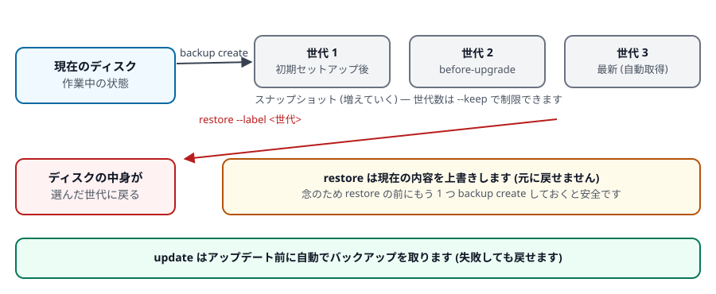

第 6 章 日々の運用
作った環境を長く使うための操作です。まず覚えるのは stop だけで十分です (使い終わったら止める)。
1. 起動と停止 (毎日使うもの)
PowerShell で実行
nakama aws list # いま何があるか、動いているか
nakama aws stop dev01 # 作業終了。中身は残ります
nakama aws start dev01 # 翌日また使うstop は電源を切るだけです。インストールしたツール、書いたコード、設定はすべて残ります。翌日 start すれば同じ状態から再開できます。止めれば課金の大部分が止まります (第 3 章)。停止の前に、ブラウザで編集中のファイルは保存してください。
外向き通信の中継役 (NAT インスタンス) も、すべての環境が停止すると自動で止まります。手動での操作は不要です。
list の表示はこうなります。
NAME INSTANCE_ID STATE TYPE INSTANCE_TYPE DISTRIBUTION_DOMAIN
box01 i-0abcdef1234567890 stopped BARE t3.medium
dev01 i-0123456789abcdef0 running VSCODE t3.medium d111111abcdef8.cloudfront.net名前順に並びます。--bare で作った環境は正面玄関を持たないので DISTRIBUTION_DOMAIN は空欄です。
| 列 | 意味 |
|---|---|
STATE | running = 起動中 / stopped = 停止中 |
TYPE | VSCODE = 通常の環境 / BARE = --bare で作った環境 / NAT = 中継役 (--show-nat を付けたときだけ表示) |
2. バックアップと復元
ディスクの内容をまるごと控えておけます。大きな変更をする前に取っておくと安心です。

backup は増やしていくもの、restore は現在の内容を置き換えるものです。図の「世代 3 最新 (自動取得)」は、次節の update が更新前に自動で取るバックアップを指します。PowerShell で実行
nakama aws backup create dev01 # ラベルは自動 (日時)
nakama aws backup create dev01 --label before-upgrade --note "アップグレード前"
nakama aws backup create dev01 --keep 5 # 古い世代を 5 つまでに整理
nakama aws backup list dev01 # 一覧
nakama aws backup list # 全環境の一覧 (NAME 列付き)
nakama aws backup note dev01 --label before-upgrade --note "動作確認済み"
nakama aws backup delete dev01 --label before-upgradeLABEL CREATED_AT STATE GiB NOTE
before-upgrade 2026-09-12T22:10:33Z completed 30 アップグレード前
2026-09-13-0012 2026-09-13T00:12:04Z pending 30STATE が pending の間はまだ作成中で、completed になれば復元に使えます。ラベルを省略すると 2026-09-13-0012 のように日時が自動で付きます (update が自動で取るものは preupdate- で始まります)。
バックアップは起動中の環境でも取れます。ただしその瞬間のディスクをそのまま写すため、ブラウザの VS Code で編集中の未保存ファイルは含まれません。書き込み途中のデータベースなどが中途半端な状態で写ることもあります。確実にしたい場合は nakama aws stop <名前> してから取ってください。
復元する
nakama aws restore dev01 # 最新のバックアップに戻す
nakama aws restore dev01 --label before-upgrade # 世代を指定して戻す実行すると確認を求められます。
Restore nakama instance "dev01" in place from backup "before-upgrade" (2026-09-12T22:10:33Z)? This deletes the current root volume. [y/N]:復元はディスクを置き換える操作です。バックアップ以降に書いた内容は失われ、元に戻せません。実行前に nakama aws backup create dev01 でいまの状態も控えておくと安全です。--yes で確認を省略できますが、意図が確実なときだけにしてください。
確認には y と入力して Enter で実行、何も入力せず Enter なら中止です。
復元は環境を止めてディスクを入れ替えるため、完了後は停止状態のままです。使うときは nakama aws start dev01 で起動してください。復元中は数分かかり、その間 connect や tunnel の接続は切れます。
削除した環境を復元する
delete で消した環境も、バックアップが残っていれば、同じ名前で作り直せます。コマンドは同じ restore です。環境が無いことを nakama が見つけて、新しい環境を作ってからディスクをバックアップの内容に入れ替えます。名前を忘れたときは、名前を省いた nakama aws backup list で探せます。
PowerShell で実行
nakama aws backup list # 削除した環境のバックアップも出る
nakama aws restore dev01 # 最新のバックアップから作り直す
nakama aws restore dev01 --label before-upgrade # 世代を指定して作り直すnakama instance "dev01" no longer exists. Restore it as a new instance from backup "before-upgrade" (2026-09-12T22:10:33Z)?
instance type : t3.medium (x86_64)
kind : code-server
IAM role : none
The disk is the backup's; nothing is reinstalled. The URL and the code-server password
are new. This takes about 15-20 minutes (CloudFront); the instance is left stopped.
[y/N]:作り直しには、create と同じく 15〜20 分ほどかかります。終わったら nakama aws start dev01 で起動し、nakama aws open dev01 で開いてください。
- そのまま戻るもの: ディスクの中身 (コード、設定、入れたソフトウェア)。ソフトウェアは入れ直さないので、バックアップを取ったときの版のままです。最新にするには
nakama aws update dev01を使います。sshの接続先の鍵 (ホスト鍵) も同じなので、nakama aws ssh setupで作った設定はそのまま使えます。 - 新しくなるもの: URL と code-server のパスワード。
openはパスワードを自動で入れるので、いつもどおり開けます。ブラウザのブックマークは作り直してください。Kiro Crew の画面を使っていた場合は、nakama aws kirocrew enable dev01をもう一度実行します。 - 大きさと種類: バックアップを取ったときのインスタンスタイプと種類 (
--bareかどうか) で作ります。--instance-typeで別のタイプにもできますが、t3(Intel/AMD) とt4g(ARM) のように CPU の種類が違うタイプにはできません。
--with-admin) は自動では付きません
元の環境に --with-admin や --with-role のロールが付いていた場合、復元ではそのことを表示するだけで、ロールは付けません。必要なら nakama aws restore dev01 --with-admin のように指定してください。
このしくみより前に取ったバックアップには、インスタンスタイプが記録されていません。その場合は nakama aws restore dev01 --instance-type t3.medium のようにタイプを指定します (--bare で作った環境なら --bare も付けます)。元と CPU の種類 (Intel/AMD か ARM か) が違うタイプを選ぶと起動しないので、元の環境と同じ系統のタイプを選んでください。
3. アップデート
OS のパッケージと code-server を最新にします。
nakama aws update dev01
nakama aws update dev01 --keep 5 --yes # 自動バックアップを 5 世代までに制限し、確認を省略内部では次の順に進みます。
バックアップを自動取得します (失敗しても戻せるようにするため)。
停止していた場合は起動します。
OS のパッケージ更新 (
apt dist-upgrade相当) と code-server の最新版導入を実行します。更新の内容によって再起動が必要な場合は再起動します。
元の電源状態に戻します (もともと停止していた環境は、また停止します)。
code-server が無いので、その部分は行われません。
更新の量によって数分から十数分かかります。実行中は PowerShell のウィンドウを閉じたり Ctrl+C を押したりしないでください。 うまくいかなかった場合は、直前に取られたバックアップから restore できます (復元後は停止状態になるので start してください)。
4. 大きさとディスクの変更
ディスクを増やす
nakama aws edit dev01 --ebs 60ディスクを 60 GiB に拡張します (GiB はギガバイトとほぼ同じ単位です)。作成時のディスクは 20 GiB なので、上の例は 3 倍にする指定です。ディスク側の拡張だけでなく、OS 側での認識 (パーティションとファイルシステムの拡張) まで自動で行われます。この作業は環境の中で実行するため、起動している状態で実行してください (停止中なら先に nakama aws start)。
- AWS の仕様上、ディスクは大きくすることしかできません (現在より小さい値は指定できません)
- AWS の制約で、一度変更すると約 6 時間は次の変更ができません。余裕をもった値を一度で指定してください
--ebsは確認を求めずに即実行されます (確認が入るのは--instance-typeの変更だけです)
インスタンスの型を変える
nakama aws edit dev01 --instance-type m6a.2xlarge
nakama aws edit dev01 --instance-type t3.medium --yes # 確認を省略停止 → 型の変更 → 元の電源状態へ復帰、という順に自動で進みます。起動中の環境に対して実行すると、いったん停止するため作業中のプロセスは終了します。
t4g (ARM) から t3 (Intel/AMD) のような変更は、ディスクの中身が対応していないためできません。第 4 章も参照してください。
5. 削除
nakama aws delete dev01確認のあと、次の順で削除します: CloudFront distribution → VPC Origin → EC2 インスタンス → ENI (ネットワークインターフェース) → セキュリティグループ → SSM のパラメータ。全体で 15〜20 分ほどかかります (CloudFront の反映待ちが大半です)。土台 (init で作った VPC や WAF) はそのまま残ります。
delete はディスクも削除するため、その環境に置いていたコードやデータは失われます。戻せるのは、backup create で取ったバックアップの時点までです (削除した環境を復元する)。それ以降に書いた内容は戻りません。
必要なものは、削除の前に nakama aws backup create を取るか、git へ push するか、nakama aws connect や scp で手元にコピーしてください。
backup のスナップショットは環境の削除後も残り、保管料がかかり続けます。不要なら nakama aws backup delete <名前> --label <ラベル> で消してください。
| オプション | 用途 |
|---|---|
--yes / -y | 確認を省略します |
--force | 「もう存在しない」というエラーを無視して先に進みます (途中で失敗した削除の後片付けに使います) |
delete は個々の環境だけを消します。VPC や WAF などの共通部分はそのままなので、また create すればすぐ作れます。共通部分まで消したい場合は AWS コンソールから手動で削除してください。